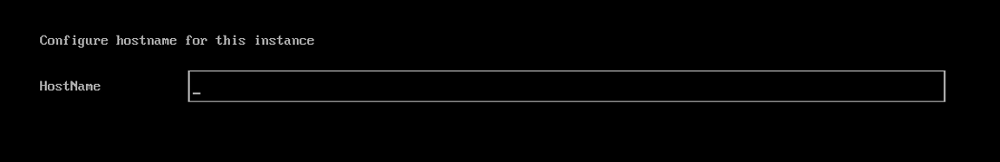
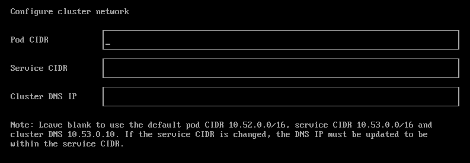
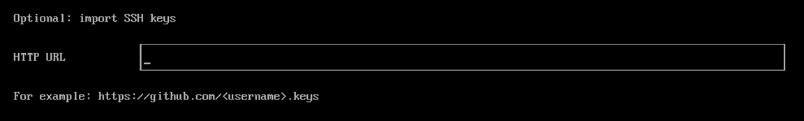
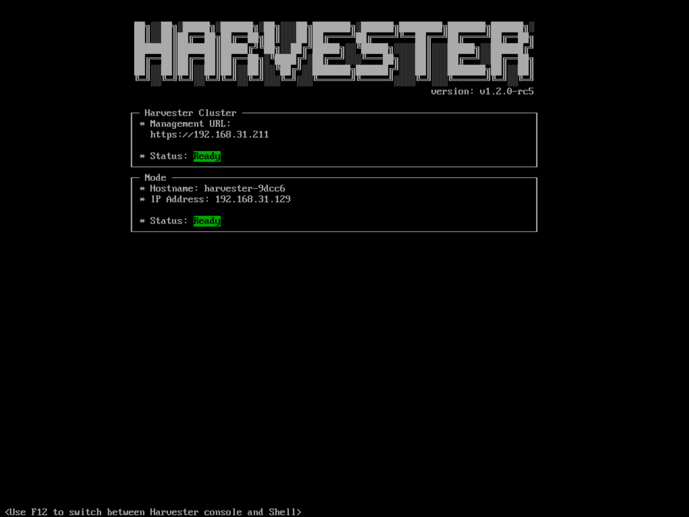
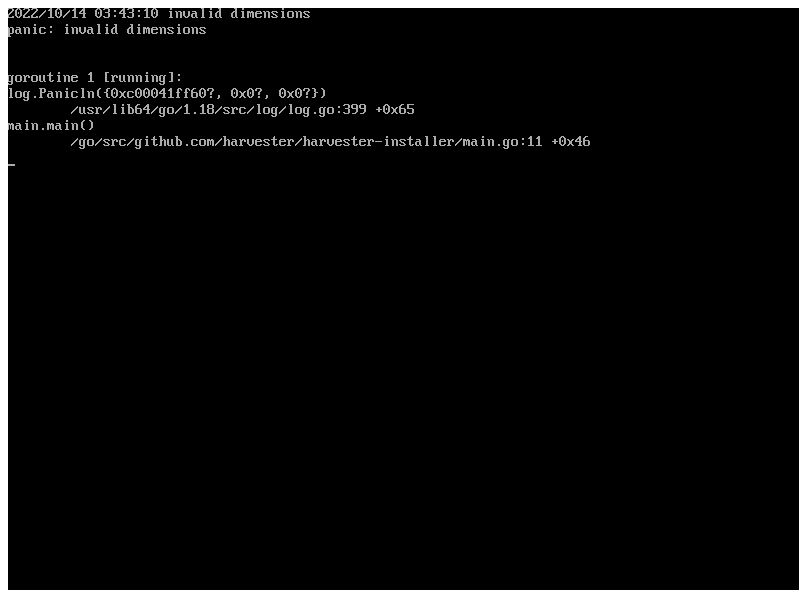

|
Este documento foi traduzido usando tecnologia de tradução automática de máquina. Sempre trabalhamos para apresentar traduções precisas, mas não oferecemos nenhuma garantia em relação à integridade, precisão ou confiabilidade do conteúdo traduzido. Em caso de qualquer discrepância, a versão original em inglês prevalecerá e constituirá o texto official. |
Instalação ISO
SUSE Virtualization é enviado como uma imagem de appliance inicializável, você pode instalá-lo diretamente em um servidor bare metal com a imagem ISO. Para obter a imagem ISO, baixe 💿 harvester-v1.x.x-amd64.iso da página Releases.
Durante a instalação, você pode escolher criar um novo cluster ou ingressar o nó em um cluster existente.
O seguinte vídeo mostra uma visão geral rápida de uma instalação ISO.
Etapas de instalação
-
Monte o arquivo ISO e inicialize o servidor selecionando a opção
Harvester Installer.
O instalador verifica automaticamente o hardware e exibe mensagens de aviso se os requisitos mínimos não forem atendidos. A tela Verificações de Hardware não é exibida se todas as verificações forem aprovadas.

-
Use as teclas de seta para escolher um modo de instalação. Por padrão, o primeiro nó será o nó de gerenciamento do cluster.

-
Create a new Harvester cluster: cria um cluster totalmente novo. -
Join an existing Harvester cluster: ingressa um cluster existente. Você precisa do VIP e do token do cluster ao qual deseja ingressar. -
Install Harvester binaries only: Se você escolher esta opção, uma configuração adicional é necessária após a primeira inicialização.Quando há 3 nós, os outros 2 nós adicionados primeiro são automaticamente promovidos a nós de gerenciamento para formar um cluster HA. Se você quiser promover nós de gerenciamento de diferentes zonas, pode adicionar o rótulo do nó
topology.kubernetes.io/zonena configuração os.labels fornecendo uma URL do arquivo de configuração na etapa de personalizar o host. Neste caso, são necessárias pelo menos três zonas diferentes.
-
-
Escolha uma função para o nó. Você deve realizar esta etapa se selecionou o modo de instalação
Join an existing Harvester cluster.
-
Default Role: Permite que um nó funcione como um nó de gerenciamento ou um nó trabalhador. Esta função não possui privilégios ou restrições específicas. -
Management Role: Permite que um nó seja priorizado quando SUSE Virtualization promove nós a nós de gerenciamento. -
Witness Role: Restringe um nó a ser um nó testemunha (funciona apenas como um nó etcd) em um cluster específico. -
Worker Role: Restringe um nó a ser um nó trabalhador (nunca promovido a nó de gerenciamento) em um cluster específico.
-
-
Configure uma senha para acessar o nó. O usuário SSH padrão é
rancher.
-
Escolha o disco de instalação no qual deseja instalar o cluster e o disco de dados onde deseja armazenar os dados da VM. Por padrão, SUSE Virtualization usa o esquema de particionamento Tabela de Partição GUID (GPT) para UEFI e BIOS. Se você usar o boot pelo BIOS, então terá a opção de selecionar Master Boot Record (MBR).
O suporte para inicialização pelo BIOS legado está descontinuado na versão v1.7.0 e será removido em uma versão posterior. Os clusters SUSE Virtualization existentes que usam este modo de inicialização continuarão a funcionar, mas a atualização para versões posteriores pode exigir reinstalação em modo UEFI. Para evitar problemas e interrupções, use UEFI em novas instalações.

-
Installation disk: O disco para instalar o cluster. -
Data disk: O disco para armazenar os dados da VM. Recomenda-se escolher um disco separado para armazenar os dados da VM. Isso não se aplica a nós testemunhas. -
Persistent size: Se você tiver apenas um disco ou usar o mesmo disco para os dados do SO e da VM, precisará configurar o tamanho da partição persistente para armazenar os pacotes do sistema e as imagens de contêiner. O tamanho padrão e mínimo da partição persistente é de 150 GiB. Você pode especificar um tamanho como 200Gi ou 153600Mi.
-
-
Configure o
HostNamedo nó.
-
Configure a(s) interface(s) de rede para a rede de gerenciamento. Por padrão, SUSE Virtualization cria uma interface de vínculo (NIC) chamada
mgmt-bopara a rede de gerenciamento incorporada, e o endereço IP pode ser configurado via DHCP ou atribuído estaticamente.
Os switches físicos conectados a interfaces agrupadas devem ser configurados estritamente como portas trunk. Essas portas devem aceitar tráfego marcado e enviar tráfego marcado com o ID da VLAN usado pela rede da VM.
Não é possível alterar o IP do nó ao longo do ciclo de vida de um cluster. Se estiver usando DHCP, você deve garantir que o servidor DHCP sempre ofereça o mesmo IP para o mesmo nó. Se o IP do nó for alterado, o nó relacionado não poderá ingressar no cluster e pode até quebrar o cluster.
Além disso, você é obrigado a adicionar a opção roteadores (
option routers) ao configurar o servidor DHCP. Essa opção é usada para adicionar a rota padrão no host. Sem a rota padrão, o nó falhará ao iniciar.Por exemplo:
Linux~ # ip route default via 192.168.122.1 dev mgmt-br proto dhcp
O valor padrão de MTU da NIC agrupada é
1500. Para usar um valor de MTU diferente, configure a [install.management_interfaceno arquivo de configuração do Harvester conforme o passo a seguir.Para mais informações, consulte Configuração do Servidor DHCP.
-
(Opcional) Configure os CIDRs para os pods e serviços do cluster.
Para usar os valores padrão, deixe os campos em branco.

Os valores de CIDR não devem se sobrepor e devem estar dentro do intervalo de endereços IP privados de 10.0.0.0/8, 172.16.0.0/12 ou 192.168.0.0/16.
O IP do serviço DNS deve estar dentro do intervalo definido pelo campo Service CIDR.
Exemplo de uma configuração CIDR válida:
-
Pod CIDR: 172.16.0.0/16
-
Service CIDR: 172.22.0.0/16
-
Cluster DNS IP: 172.22.0.10
-
-
(Opcional) Configure o
DNS Servers. Use vírgulas entre os valores para adicionar mais servidores DNS. Deixe em branco para usar o servidor DNS padrão.
-
Configure o IP virtual (VIP) selecionando um
VIP Mode. Este VIP é usado para acessar o cluster ou para que outros nós ingressem no cluster.Para configuração de DHCP com mapeamentos de endereço MAC para IP estáticos configurados, insira o endereço MAC no campo fornecido para buscar o IP virtual persistente único (VIP). Caso contrário, deixe em branco.

-
Configure o
Cluster token. Este token é usado para adicionar outros nós ao cluster.
-
Configure
NTP serverspara garantir que os horários de todos os nós estejam sincronizados. Isso é padrão para0.suse.pool.ntp.org. Use vírgulas entre os valores para adicionar mais servidores NTP.
Usar múltiplos servidores NTP proporciona redundância, melhor precisão, tolerância a falhas e desempenho aprimorado. Isso garante que a sincronização de tempo continue mesmo se um servidor falhar ou fornecer dados incorretos, e ajuda a distribuir a carga entre diferentes servidores.
-
(Opcional) Se você precisar usar um proxy HTTP para acessar o mundo exterior, insira o
Proxy address. Caso contrário, deixe isso em branco.
-
(Opcional) Você pode escolher importar chaves SSH fornecendo
HTTP URL. Por exemplo, suas chaves públicas do GitHubhttps://github.com/<username>.keyspodem ser usadas.
-
(Opcional) Se você precisar personalizar o host com um arquivo de configuração, insira o
HTTP URLaqui.
-
Revise e confirme suas opções de instalação. Após confirmar as opções de instalação, SUSE Virtualization será instalado em seu host. A instalação pode levar alguns minutos para ser concluída.

-
Uma vez que a instalação esteja completa, seu nó reinicia. Após a reinicialização, o console exibe a URL de gerenciamento e o status. A URL padrão da interface web é
https://your-virtual-ip. Você pode usarF12para alternar do console para o Shell e digitarexitpara voltar ao console.Escolher
Install Harvester binaries onlyna primeira página requer configuração adicional após a primeira inicialização.
-
Você será solicitado a definir a senha para o usuário padrão
adminao fazer login pela primeira vez.
Problema conhecido
O instalador pode travar ao usar uma placa de vídeo ou monitor mais antigos.
Em alguns casos, se você estiver usando uma placa de vídeo ou um monitor mais antigos, pode encontrar um erro panic: invalid dimensions durante a instalação do ISO.

Estamos trabalhando nesta questão conhecida e planejando uma correção para uma futura versão. Você pode tentar usar outra entrada do GRUB para forçá-lo a usar a resolução de 1024x768 ao inicializar.

Se você estiver usando uma versão anterior à v1.1.1, por favor, tente a seguinte solução alternativa:
-
Inicie com o ISO e pressione
Epara editar a primeira entrada do menu:
-
Adicione
vga=792à linha que começa com$linux:
-
Pressione
Ctrl+XouF10para iniciar.